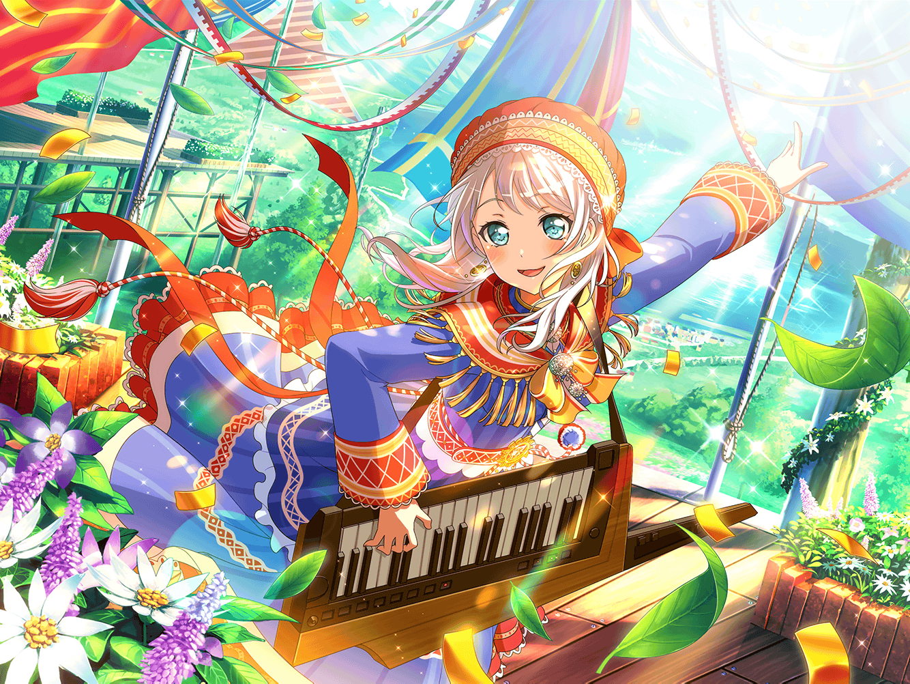

羽沢珈琲店
イヴ
あら？ {{userName}}さん、こんにちは。
イップク、ですか？
イヴ
実は私もちょうどアルバイトが終わったところなんです！
イヴ
良かったら、ご一緒してもいいですか？
イヴ
ありがとうございます！
それじゃあちょっと用意してきますね！
イヴ
お待たせしました、ホットコーヒーです！
イヴ
コーヒーといえば
フィンランドの人はすごくコーヒーをたくさん飲むんです
イヴ
家にいるときもお仕事するときも、
みんなコーヒーを飲んでいるんですよ
イヴ
朝にはコーヒーと一緒に、良くプッラを食べるんです！
イヴ
あ、プッラはパンのことですね！
イヴ
日本でいうと菓子パン……でしょうか？
イヴ
シナモンロールとか……ですね！
イヴ
私もプッラは大好きです！
イヴ
あ……コーヒー、ご馳走していただいてありがとうございます！
こういうときは……
イヴ
かたじけのうござる！ ですね！
イヴ
あれ……？ 違いましたか？
イヴ
あ、そうだ！ この間、私の家でホームパーティをしたんですよ！
イヴ
パーティのとき
私のフィンランドのお友達、ハンネも遊びに来てくれたんです
イヴ
旅行代とかすごく高いのに、わざわざ来てくれて……
イヴ
私、それがすごく嬉しかったんです！
イヴ
でも……私、ハンネに嘘をついていたんです
イヴ
日本に来て、たくさんお友達ができたって言ったんですけど
本当はそんなに多くなくて……
イヴ
私、友達があまりいないことで心配を掛けたくなくて
つい嘘をついてしまったんですけど……
イヴ
ハンネはその嘘にも気づいていて、
逆に心配をかけてしまったんです
イヴ
私が嘘をつかなければ
心配をかけることもなかったので、
すごく悪いことをしてしまったと思って
イヴ
なんだか胸がもやもやしました……
イヴ
あ、でも嘘をついていたことは、ちゃんと謝れました！
イヴ
チサトさんやカスミさん、カノンさん……みなさんのおかげです！
イヴ
もし、いつかみなさんに何かあったら、
今度は私がお手伝いしたいです
イヴ
皆さんの悩みは私がイットーリョーダン！
ゴオンとホーコーですね！
イヴ
そうそう、パーティではリサさんにレシピをもらって、
ニッポンの料理も作ってみたんです
イヴ
手巻き寿司に味噌汁……あとは折り紙もしました
イヴ
サムライの衣装も着て、和風のおもてなしをやってみたんです
イヴ
やっぱり見るのと、自分でやってみるのは全然違いますね！
イヴ
ブシドーはもちろんですが、日本の文化にもっと興味が沸きました
イヴ
スシ、スキヤキ、富士山だけじゃなく、
日本には素晴らしい文化がたくさんあります！
イヴ
例えば……お餅つき！
イヴ
そのパーティの後、カスミさんたちが、
次はお餅つきをやろうと言ってくれたんです
イヴ
お餅つきはお正月のギョージらしいので
今すぐにはできないのが残念ですけど……
イヴ
今からすごく楽しみです！
イヴ
お正月までの期間は、剣道の素振りだけじゃなくて、
キネでお餅をつく練習もしたいと思います！
イヴ
あ、{{userName}}さんは
お餅をこねる練習をしてみてはどうですか？
イヴ
私がキネでつくので、こねてください！
イヴ
二人で一緒にお餅をつくの、すごく楽しそうですよね！
イヴ
それにしても、お雑煮に、きなこ餅に、あんころ餅！
イヴ
どれから食べるか、今からすごく迷いますね……！
イヴ
お正月は絶対一緒にお餅をつきましょうね！
{{userName}}さん！